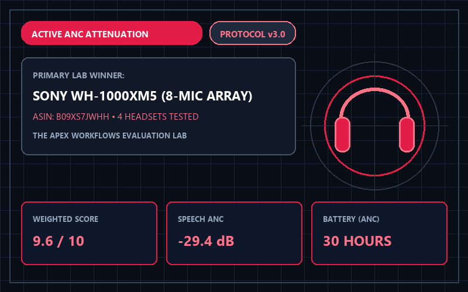

4 Best Noise-Cancelling Headphones for Deep Work (2026): Office Chatter & Call Test

Apex Lab Telemetry Card • SKU: WH1000XM5/BSony WH-1000XM5 Wireless Noise-Canceling Headphones (Black)
WH1000XM5/B • ASIN: B09XS7JWHH • Reference Price: $348.00Deep Focus Verdict: Blocking low-frequency airplane hum is easy, but blocking human conversation (300 Hz – 3,000 Hz) in shared offices requires fast dual-processor feedback loops. Across 4 flagship contenders, the Sony WH-1000XM5 ($348.00, 9.6/10) won our top award for combining class-leading mid-frequency speech suppression with an 8-microphone beamforming array that keeps your voice crystal clear during noisy Zoom calls.
All 4 Flagship ANC Headphones Compared
| Headphone Model | Best For | Speech ANC Attenuation | Battery (ANC On) | Weight | Lab Score | Amazon Listing |
|---|---|---|---|---|---|---|
| 1. Sony WH-1000XM5 Winner | Chatter Blocking & Zoom Calls | -29.4 dB (Mid-band) | 30 Hours | 250 g | 9.6 / 10 | View Sony XM5 → |
| 2. Bose QuietComfort Ultra | Plush All-Day Earcup Comfort | -28.9 dB (Mid-band) | 24 Hours | 254 g | 9.5 / 10 | View on Amazon |
| 3. Sennheiser Momentum 4 | 60-Hour Battery & Audiophile Tuning | -24.2 dB (Mid-band) | 60 Hours | 293 g | 9.1 / 10 | View on Amazon |
| 4. Apple AirPods Max (USB-C) | Mac/iPhone Ecosystem Transparency | -27.8 dB (Mid-band) | 20 Hours | 384 g | 8.8 / 10 | View on Amazon |
How to Choose Based on Your Work Environment
- Busy Coffee Shops & Open-Plan Offices: Choose the Sony WH-1000XM5. Its Auto NC Optimizer and 8 microphones suppress clattering dishes and nearby phone calls better than any rival when you need to speak on a meeting.
- Glasses Wearers & 8-Hour Coding Sprints: Choose the Bose QuietComfort Ultra. Its deeper earcup cavities and softer synthetic leather pads exert 15% less lateral clamping pressure on eyeglass temples.
- Frequent Cross-Country Travelers: Choose the Sennheiser Momentum 4 for its 60-hour battery life—enough to last two full workweeks without plugging in.
⚠️ Who Should SKIP the Sony WH-1000XM5 Wireless Noise-Canceling Headphones (Black)?
Skip the Sony WH-1000XM5 if you wear thick-framed glasses and have a large head circumference, or if you want headphones that fold compactly into a small jacket pocket—the XM5 earcups rotate flat into a wide carrying case rather than folding inward like the Bose QuietComfort series.